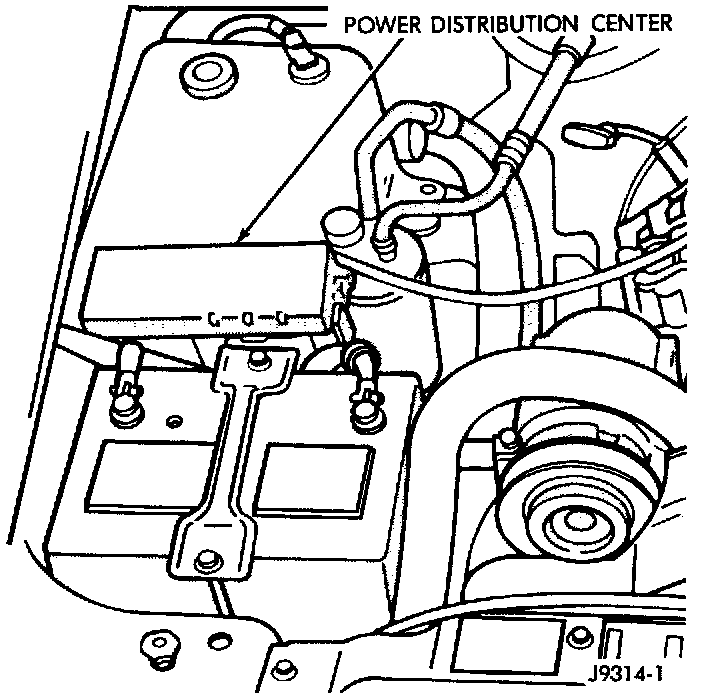

Main Relay (Computer/Fuel System): Service and Repair
AUTOMATIC SHUTDOWN (ASD) RELAYFig. 29 PDC Location:

The Automatic Shutdown (ASD) relay is located in the Power Distribution Center (PDC). The PDC is located in the engine compartment (Fig. 29). Refer to label on PDC cover for relay location. Check the terminals in the PDC relay connector for corrosion or damage before installation.